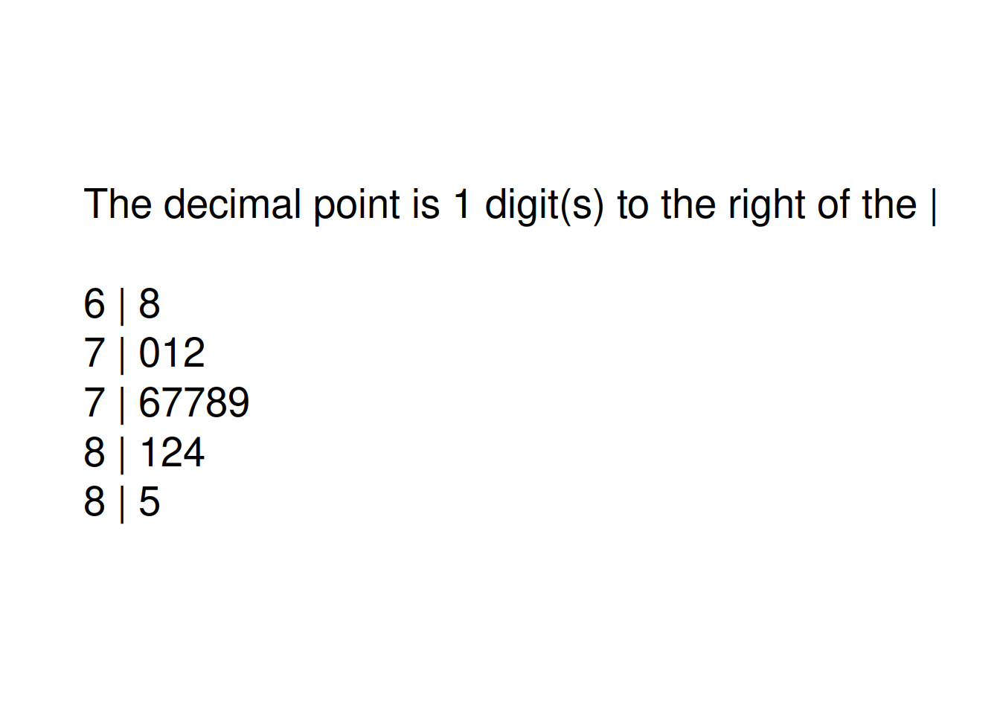
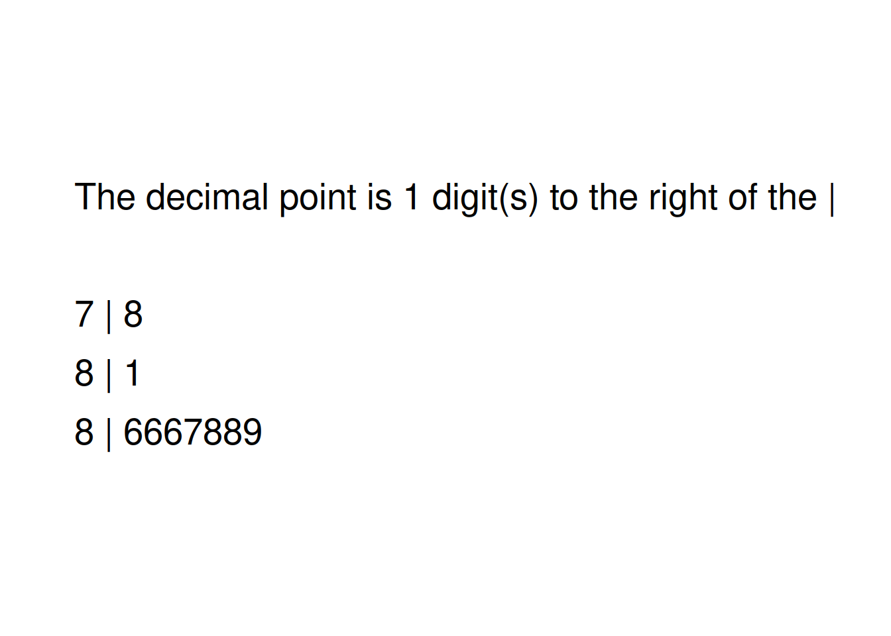
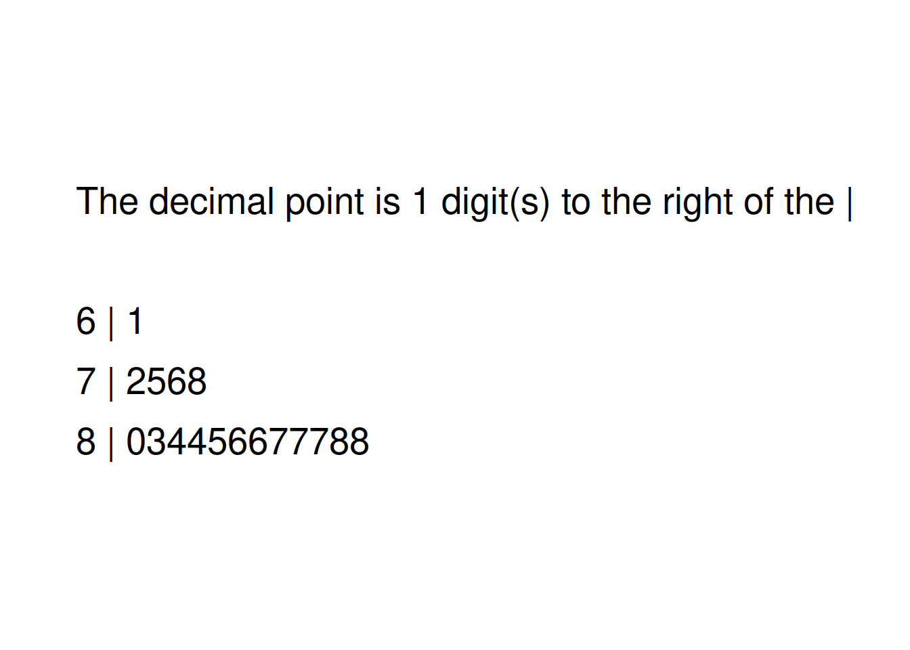
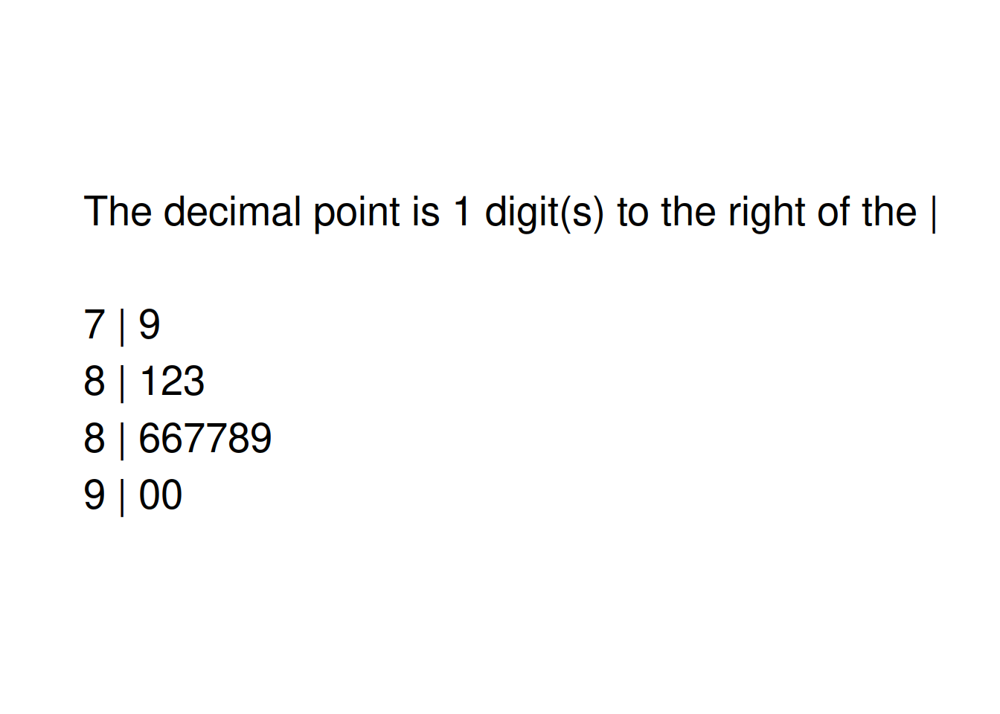

| Estado | Percent. | Região | Estado | Percent. | Região | Estado | Percent. | Região |
|---|---|---|---|---|---|---|---|---|
| Alabama | 86.3 | S | Louisiana | 74.6 | S | Ohio | 81.8 | MO |
| Alaska | 71.1 | O | Maine | 86.5 | NE | Oklahoma | 82.7 | S |
| Arizona | 75.7 | O | Maryland | 86.4 | S | Oregon | 72.0 | O |
| Arkansas | 86.9 | S | Massachusetts | 86.1 | NE | Pennsylvania | 85.5 | NE |
| California | 81.0 | O | Michigan | 78.6 | MO | Rhode Island | 80.8 | NE |
| Colorado | 77.3 | O | Minnesota | 81.2 | MO | South Carolina | 80.1 | S |
| Connecticut | 87.0 | NE | Mississippi | 77.6 | S | South Dakota | 82.7 | MO |
| Delaware | 87.0 | S | Missouri | 87.3 | MO | Tennessee | 87.2 | S |
| Florida | 76.1 | S | Montana | 85.4 | O | Texas | 88.3 | S |
| Georgia | 72.5 | S | Nebraska | 89.7 | MO | Utah | 83.9 | O |
| Hawaii | 81.8 | O | Nevada | 70.0 | O | Vermont | 87.8 | NE |
| Idaho | 77.3 | O | New Hampshire | 88.1 | NE | Virginia | 85.3 | S |
| Illinois | 86.0 | MO | New Jersey | 88.6 | NE | Washington | 78.2 | O |
| Indiana | 87.9 | MO | New Mexico | 68.5 | O | West Virginia | 84.5 | S |
| Iowa | 90.5 | MO | New York | 77.8 | NE | Wisconsin | 88.6 | MO |
| Kansas | 85.7 | MO | North Carolina | 83.9 | S | Wyoming | 78.6 | O |
| Kentucky | 87.5 | S | North Dakota | 87.2 | MO | District of Columbia | 61.4 | S |
Organização de um problema estatístico
Análise de Dados | CC – FCI
A maioria de nossos exemplos e exercícios teve por objetivo ajudar você a aprender as ferramentas básicas (gráficos e cálculos) para a descrição e comparação de distribuições. Você aprendeu, também, os princípios básicos que orientam o uso dessas ferramentas, como “comece por um gráfico” e “observe o padrão geral e desvios fortes do padrão”. Os dados com os quais você trabalha não são apenas números; eles descrevem um contexto específico, como a profundidade da água nos Everglades, ou os tempos de viagem para o trabalho. Pelo fato de os dados se originarem de um contexto específico, o passo final no exame de dados é uma conclusão em relação a esse contexto. A profundidade da água nos Everglades tem um ciclo anual que reflete as estações de chuva e de seca na Flórida. Os tempos de viagem para o trabalho são geralmente mais longos em Nova York do que na Carolina do Norte.
Vamos voltar às taxas de graduação no prazo no Ensino Médio, discutidas no Exemplo 1.4. Pelo exemplo, sabemos que as taxas de graduação no prazo variam de 71,1%, no Novo México, a 91%, em Iowa, com mediana de 86%. As taxas de graduação nos estados estão relacionadas a muitos fatores e, em um problema estatístico, em geral tentamos explicar as diferenças ou variação em uma variável como taxa de graduação através de alguns desses fatores. Por exemplo, os estados com menores rendas familiares tendem a ter taxas de graduação mais baixas no Ensino Médio? Ou, os estados em alguma região do país tendem a ter taxas mais baixas de graduação no Ensino Médio do que os estados em outras regiões?
À medida que você aprender mais sobre as ferramentas e os princípios estatísticos, você se deparará com problemas estatísticos mais complexos. Embora nenhum sistema acomode todos os vários problemas que surgem na aplicação da estatística ao mundo real, achamos que o seguinte processo de pensamento em quatro passos dá uma orientação útil. Em particular, o primeiro e o último passos enfatizam que os problemas estatísticos estão ligados a situações específicas do mundo real e, portanto, envolvem mais do que cálculos e desenho de gráficos.
Organização de um problema estatístico: um processo de quatro passos
- ESTABELEÇA: Qual é a questão prática, no contexto do mundo real?
- PLANEJE: Quais operações estatísticas específicas esse problema requer?
- RESOLVA: Construa gráficos e faça os cálculos necessários para esse problema.
- CONCLUA: Forneça suas conclusões práticas no contexto do mundo real.
Para ajudar você a dominar o básico, muitos exercícios irão continuar a dizer-lhe o que fazer – faça um histograma, ache o resumo dos cinco números, e assim por diante. Problemas estatísticos reais não vêm com instruções detalhadas. De agora em diante, especialmente nos capítulos finais deste livro, você encontrará alguns exercícios que são mais realistas. Use o processo dos quatro passos como guia para resolver e relatar esses problemas. Estes vêm marcados com o ícone dos quatro passos, como ilustra o exemplo seguinte.
EXEMPLO 2.9 Comparação de taxas de graduação
ESTABELEÇA: A lei federal exige que todos os estados nos EUA usem um cálculo comum para as taxas de graduação no prazo no Ensino Médio, começando no ano escolar de 2010 e 2011. Anteriormente, os estados escolhiam vários métodos de cálculo que davam respostas que podiam variar em mais de 10%. Esse cálculo comum permite comparação significativa das taxas de graduação entre os estados.
Pela Tabela 1, agora sabemos que as taxas de graduação no prazo no Ensino Médio no ano escolar de 2016 e 2017 variaram de 71,1%, no Novo México, a 91%, em Iowa. O birô do censo norte-americano divide os 50 estados e o Distrito de Colúmbia em quatro regiões geográficas: a Nordeste (NE), Meio-Oeste (MO), Sul (S) e Oeste (O). A região para cada estado está incluída na Tabela 1.1. Os estados nas quatro regiões do país apresentam distribuições distintas das taxas de graduação? Como se comparam as taxas médias de graduação dos estados em cada uma dessas regiões?
PLANEJE: Use gráficos e resumos numéricos para descrever e comparar as distribuições das taxas de graduação no prazo no Ensino Médio dos estados nas quatro regiões dos EUA.
RESOLVA: Podemos usar diagramas em caixa para comparar as distribuições, mas diagramas de ramo e folhas preservam mais detalhes e funcionam bem com conjuntos de dados desse tamanho. Abaixo são apresentados diagramas de ramo e folhas com os ramos alinhados, para fácil comparação. Os ramos foram divididos para apresentar melhor as distribuições, e os dados foram arredondados para o percentual mais próximo (sem casas decimais). Os diagramas de ramo e folhas se sobrepõem, e é necessário algum cuidado na comparação dos quatro diagramas de ramo e folhas porque os tamanhos amostrais diferem, com alguns diagramas de ramo e folhas tendo mais folhas do que outros. Os estados norte-americanos do Nordeste e do Meio-Oeste têm distribuições que são semelhantes entre si. O Sul, com a maioria das observações, tem uma observação baixa que corresponde ao Distrito de Colúmbia, que fica um pouco separado dos demais, e alguma assimetria à esquerda. Com pouca assimetria e sem valores atípicos sérios, relatamos x e s como nossas medidas resumo do centro e variabilidade da distribuição das taxas de graduação no prazo dos estados em cada região. Como o Distrito de Colúmbia não é um estado, embora frequentemente incluído com dados dos estados, relatamos as estatísticas resumo para o Sul com e sem essa observação.
| Região | N | Média | Desvio Padrão |
|---|---|---|---|
| Meio-Oeste | 12 | 85.60 | 3.72 |
| Nordeste | 9 | 85.36 | 3.65 |
| O | 13 | 76.98 | 5.36 |
| Sul (inc. DC) | 17 | 81.66 | 7.20 |
| Sul (exc. DC) | 16 | 82.93 | 5.13 |
Diagramas Ramo-Folha para as Regiões
Oeste

Nordeste

Sul

Meio-Oeste

CONCLUA: A tabela de estatísticas resumo e os diagramas de ramo e folhas levam a conclusões semelhantes. Os estados norte-americanos do Meio-Oeste e do Nordeste são mais semelhantes entre si com o Sul, excluindo o Distrito de Colúmbia, tendo uma média ligeiramente menor e maior desvio-padrão. Os estados do Oeste têm uma taxa média de graduação mais baixa do que as outras três regiões, com desvio-padrão semelhante ao do Sul, porém mais alto do que os do Meio-Oeste ou Nordeste.
É importante lembrar que os indivíduos no Exemplo 2.9 são os estados. Por exemplo, a média de 87,12 é a média das taxas de graduação no prazo para os nove estados norte-americanos do Nordeste, e o desvio-padrão nos diz quanto as taxas desses estados variam em relação a essa média. No entanto, a média desses nove estados não é a mesma que a taxa de graduação para todos das escolas de Ensino Médio no Nordeste, a menos que os estados tenham o mesmo número de graduados no Ensino Médio. A taxa de graduação no Nordeste para todos os estudantes do Ensino Médio no Nordeste é uma média ponderada das taxas dos estados, com os maiores estados recebendo mais peso. Por exemplo, como Nova York é o estado mais populoso no Nordeste e tem também a menor taxa da graduação, esperaríamos que a taxa de graduação de todos os estudantes do Ensino Médio no Nordeste fosse menor que 87,12, porque Nova York puxaria para baixo a taxa geral de graduação. Um exemplo análogo pode ser observado no Exercício 2.371
Notas de rodapé
Referente ao livro texto.↩︎